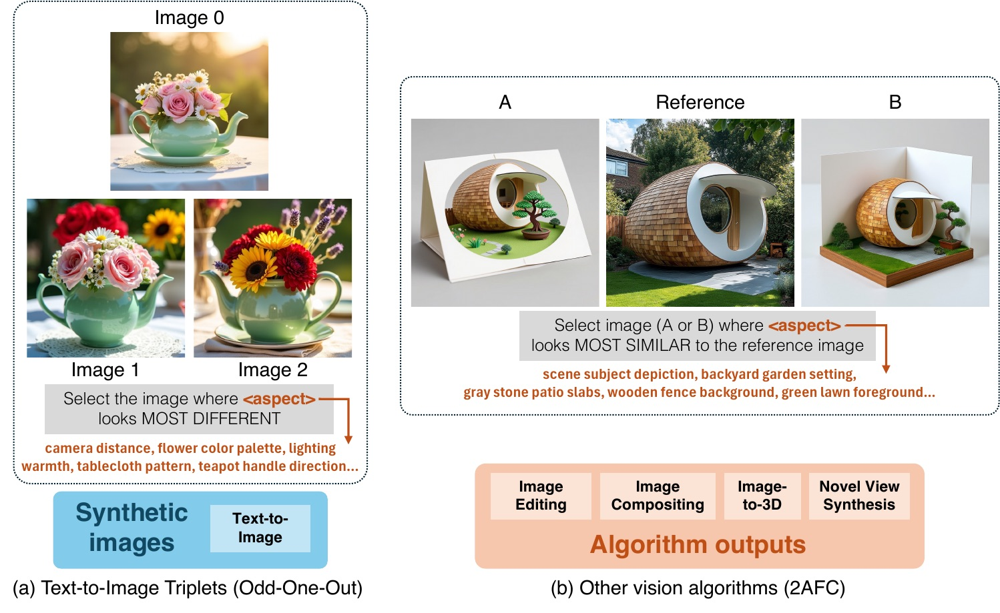
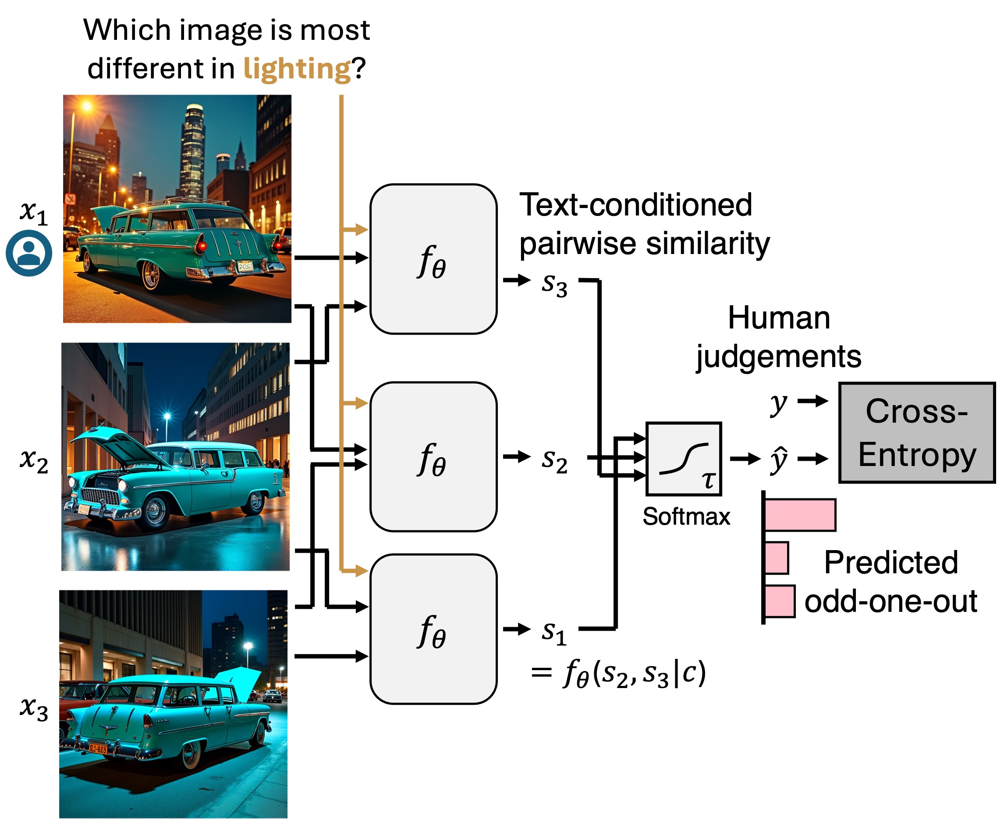
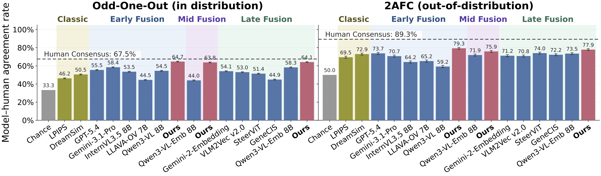
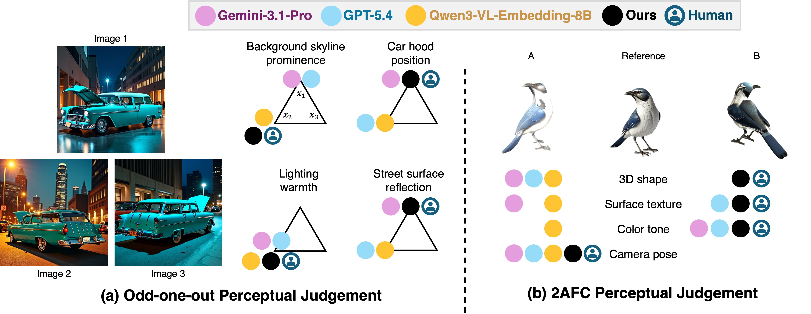
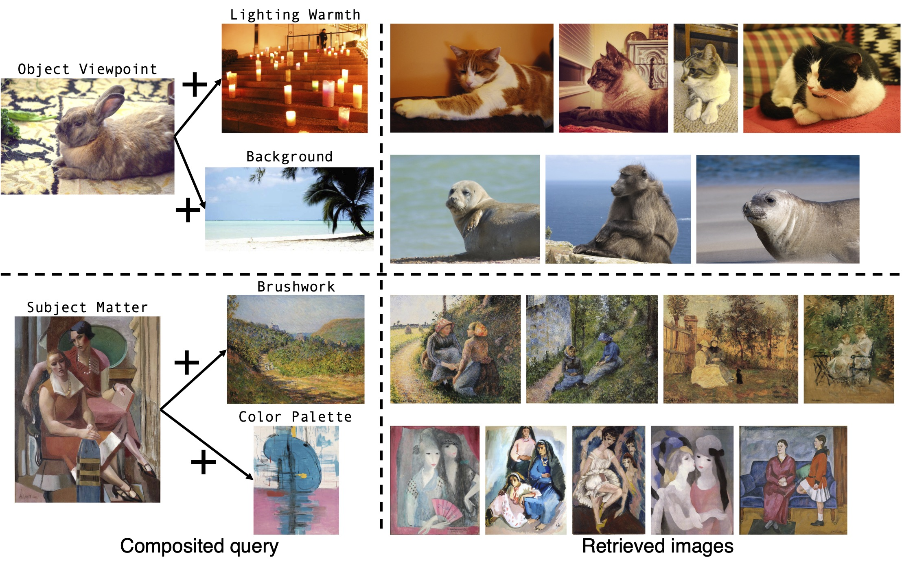

pip install package and code release will be out soon. Stay tuned!
Given a query photo, we apply TPIPS to retrieve its nearest neighbors conditioned on different visual aspects. Retrieval is done from OpenImages, a dataset of 1.74M real-world images. Conditioning on overall recovers ordinary overall similarity. To encourage retrieval diversity, we adjust the ranking score by subtracting 0.3 of the overall similarity from the aspect similarity. Use the arrows to switch queries; click any image to zoom.
The same aspect-conditioned similarity extends to video: pick a clip, pick a factor, and pick a reference frame — the curve shows how similar every other frame is to that reference along the chosen aspect, and updates live as the video plays.
To train a text-conditioned similarity model, we curate triplets of synthetic images and ask 5 different annotators an odd-one-out question for each visual aspect. To test generalization, a second smaller held-out set covers outputs from external algorithms—image editing, compositing, novel-view synthesis and image-to-3D—annotated with a 2AFC protocol.

When an image is the odd-one-out of a triplet conditioned on an aspect, the similarity between the two non-chosen images should intuitively be the greatest. We predict this odd-one-out selection by applying a softmax over the pairwise similarities, and train the embeddings using a cross-entropy loss.

Across recent open and proprietary vision-language models, embedding models, and activation-difference baselines, TPIPS gives the closest agreement with human aspect-conditioned similarity judgments — both in-domain (odd-one-out) and out-of-domain (2AFC on real vision-algorithm outputs).



@article{wang2026tpips,
title={The Many Senses of Visual Similarity: A Text-Prompted Image Perceptual Metric},
author={Wang, Sheng-Yu and Nitzan, Yotam and Hertzmann, Aaron and Zhu, Jun-Yan and Shechtman, Eli and Efros, Alexei A. and Zhang, Richard},
journal={arXiv preprint arXiv:2607.18237},
year={2026}
}